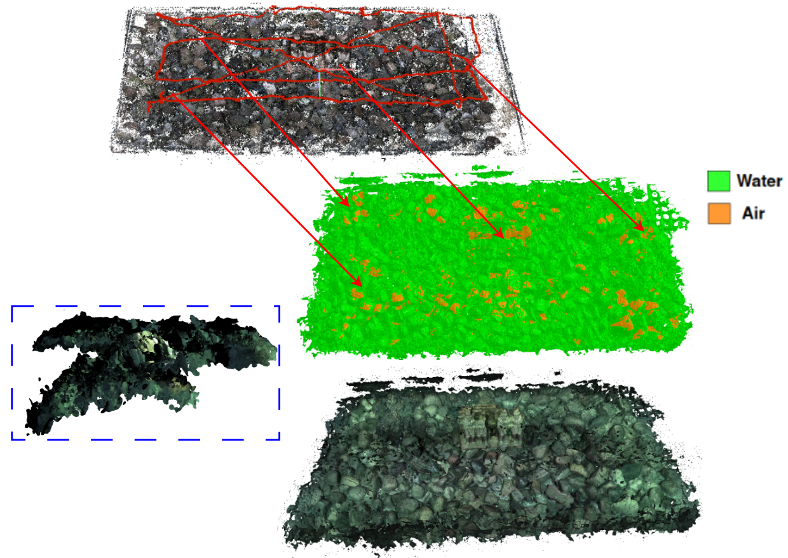

BALTIC
A Benchmark for 3D Reconstruction Across Air and Underwater Domains Under Varying Illumination
A Benchmark for 3D Reconstruction Across Air and Underwater Domains Under Varying Illumination

Cross-domain reconstruction under air and underwater conditions.
BALTIC is a benchmark designed to evaluate 3D reconstruction methods under strong domain shifts between air and underwater environments. The dataset enables systematic analysis of illumination changes, scattering, and absorption effects on geometry and pose estimation.
The dataset consists of 13 sequences captured under different environmental conditions.
Total size: ~56 GB
The dataset is hosted on Hugging Face and can be downloaded programmatically:
pip install huggingface_hub
from huggingface_hub import snapshot_download
snapshot_download(
repo_id="Michele1996/BALTIC",
repo_type="dataset",
local_dir="BALTIC",
local_dir_use_symlinks=False
)
Preserves full directory structure (E1–E13).
We provide a lightweight evaluation toolkit for reproducible benchmarking.
git clone https://github.com/Michele1996/baltic-project-page.git cd baltic-project-page python chamfer.py python alignment.py
Computes geometry metrics (Chamfer, roughness) and trajectory metrics (ATE, RPE) after Umeyama alignment between COLMAP and ground-truth trajectories.
Trajectory formats:
E*_xyz_q.txt (COLMAP reconstruction) E*_tf.txt (ground-truth tracking)

COLMAP reconstructions under air vs underwater conditions.
All results are fully reproducible using the dataset and devkit.
@misc{grimaldi2026baltic,
title={BALTIC: A Benchmark for 3D Reconstruction Across Air and Underwater Domains},
author={Michele Grimaldi et al.},
year={2026},
url={https://arxiv.org/abs/2604.19133}
}
Michele Grimaldi – michelegrmld@gmail.com